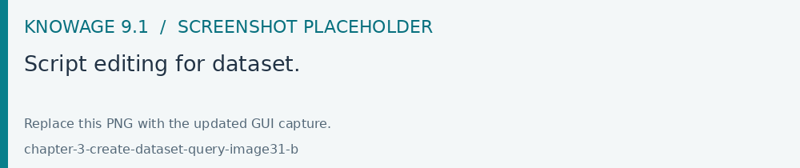
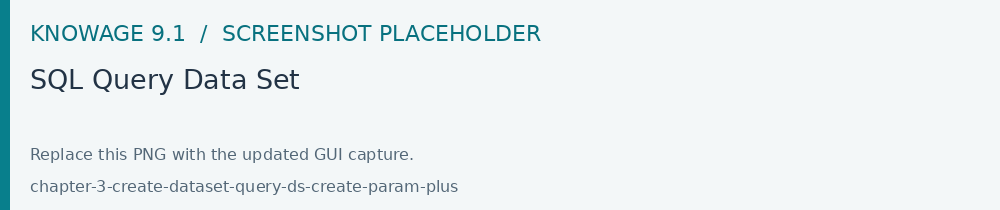
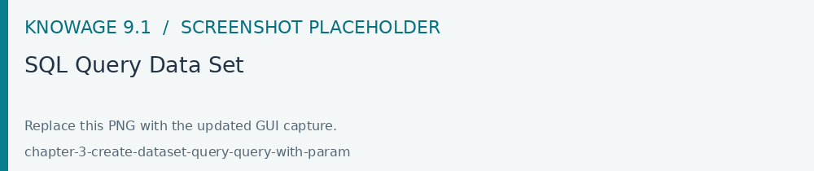

SQL Query Data Set
Create a Query dataset in Dataset Management, choose its data source and write SQL in that source’s dialect. Declare the query parameters explicitly, preview with representative values and review the returned metadata before saving. Use Dataset metadata and advanced options for persistence and column options.
Selecting the query option requires the BI developer to write an SQL statement to retrieve data.
Remember that the SQL dialect depends on the data source that has been chosen. The SQL text must be written in the Query text area. Below a SQL query example.
1 SELECT p.media_type as MEDIA, sum(s.store_sales) as SALES
2 FROM sales_fact_1998 s
3 JOIN promotion p on s.promotion_id=p.promotion_id
4 GROUP BY p.media_type
It is also possible to dynamically change the original text of the query at runtime. This can be done by defining a script (Groovy or JavaScript) and associating it to the query. Click on the Edit Script section (see next figure) to open the script editor and write your script. The base query is bounded to the execution context of the script (variable query) together with its parameters (variable parameters) and all the profile attributes of the user that executes the dataset (variable attributes).

Fig. 85 Script editing for dataset.
In the script below we use JavaScript to dynamically modify the FROM clause of the original query according to the value of the parameter year selected at runtime by the user. You can notice that the variable query, provided by Knowage, contains the text of the SQL query.
1 if(isValid('year')) {
2 if( parameters.get('year') == 1997 ) {
3 query = query.replace('FROM sales_fact_1998', 'FROM sales_fact_1997');
4 } else {
5 query = query; // do nothing
6 }
7 }
In the above example we use the function isValid to test whether the parameter year contains a null value or not.
Another example:
1 var title = "";
2
3 if(isValid('par_title')){
4 title="and cap.VERSO_CPT||'.'||cap.COD_TITOLO||'-'||replace(cap.DESC_TITOLO,',',' ') in ($P{par_title})";
5 }
6 query=query.replace("_TITLE_",title);
_TITLE_ is a placeholder inside the SQL query
You can read the user attribute also using : var visibility = attributes.get(‘visibility’);
In KNOWAGE when creating a dataset of QUERY type it is also possible to handle parameters in queries. Below are shown the steps to associate parameters to a dataset and manage their values (coming i.e. from an analytical driver) inside the query.

Create parameters in a dataset.
As shown above the plus icon allows the creation of parameters that can be single or multi value.
After creating your parameters they can be handled in the query using the syntax $P{parameter_name}.
Below an example of a query with the parameter formerly created.

Create parameters in a dataset.